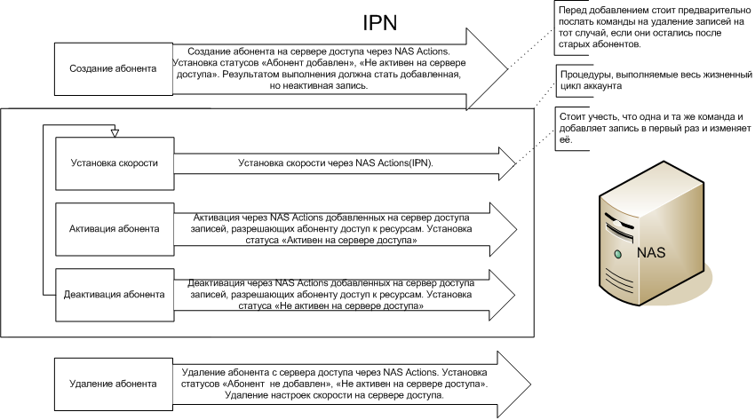
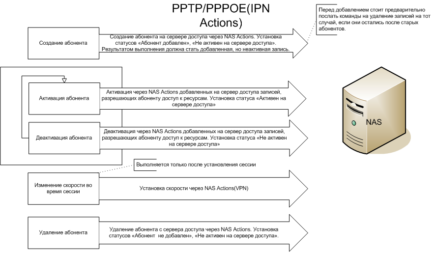

ExpertBilling позволяет обслуживать как коммутируемые(PPTP/PPPOE/HoSpot), так и некоммутируемые соединения. В случае работы с IPN тарифными планами, или PPPOE/PPTP тарифными планами с дублированием IPN действий схема работы системы выглядит следующим образом.

Схема работы с IPN тарифными планами
При создании абонента система посылает на сервер доступа команду "Добавить абонента" из настроек сервера доступа в интерфейсе администратора. Команда "Добавить абонента" является шаблоном, в котором служебные слова $access_type, $password, $username, $user_id, $account_ipn_ip, $account_vpn_ip, $account_mac_address заменяются соответствующими значениями. Резальтатом работы команды должны стать добавленные, но неактивированные записи.
Установка скорости производится аналогичным способом через NAS Actions. В дополнение к подстановочным символам из команды на добавление абонента здесь используются $max_limit_tx, $max_limit_rx, $burst_limit_tx, $burst_limit_rx, $burst_treshold_tx, $burst_treshold_rx, $burst_time_tx, $burst_time_rx, $priority, $min_limit_tx, $min_limit_rx. Следуюет обратить внимание, но то, что перед добавлением записи, система должна перестраховаться и удалить уже возможно существующую с таким же идентификатором. Биллинг посылает команду на установку/изменение скорости в случае если скорость ещё не установлена или изменилась.
Активация абонента должна приводить к активации добавленных на сервер доступа записей. Активация происходит в том случае, если абонент не активен и у него нет блокировок или ограничений по размеру баланса. Для активации используется соответствующий NAS Actions из параметров сервера доступа. В данной команде можно использовать те же подстановочные символы, что и для добавления абонента.
Деактивация абонента должна приводить к деактивации добавленных на сервер доступа записей. Деактивация происходит в том случае, если абонент активен и у него появилась одна или несколько блокировок.
Удаление абонента происходит при его удалении из системы. Используемые подстановочные символы аналогичны команде добавления.Обратите внимание, что команда удаления с сервера доступа так же выставляет в системе статус "Не активен на сервере доступа".
Состояние каждого абонента вы можете контроллировать через EBS Admin в списке абонентов.

Статус аккаунта
Четыре иконки напротив каждого абонента означают (слева-направо) "У клиента достаточно средств на лицевом счету для работы в текущем расчётном периоде", "У клиента нет блокировок по лимитам", "Пользователь неактивен на NAS", "Пользователь не добавлен на NAS".
ExpertBilling позволяет использовать IPN действия и для PPTP/PPPOE тарифных планов.

Схема использования IPN действий для PPTP/PPPOE тарифных планов.
IPN действия для PPTP/PPPOE тарифных планов отличаются от работы с IPN тарифными планами лиш тем, что настройки скорости для абонентов устанавливаются после каждой RADIUS авторизации.
Использование IPN действий целесообразно тогда, когда вы не хотите запрещать PPTP/PPPOE абонентам авторизацию при их блокировке, однако хотите закрыть доступ к определённым ресурсам или перенаправлять всех таких абонентов на какие-то ресурсы.
This help file was created with an unregistered evaluation copy of Help & Manual. © EC Software. All rights reserved. This message will not appear if you compile this help file with the registered version of Help & Manual.